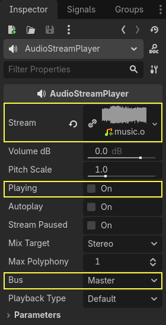

Audio bus
Giới thiệu
Mã xử lý âm thanh của Godot được viết với mục tiêu phục vụ game, nhằm đạt được sự cân bằng tối ưu giữa hiệu năng và chất lượng âm thanh.
Engine âm thanh của Godot cho phép tạo bao nhiêu audio bus tùy ý và có thể thêm bao nhiêu bộ xử lý hiệu ứng tùy ý vào mỗi bus. Chỉ có phần cứng của thiết bị chạy game mới giới hạn số lượng bus và hiệu ứng có thể dùng trước khi hiệu năng bắt đầu bị ảnh hưởng.
Thang decibel
Giao diện âm thanh của Godot được thiết kế để đáp ứng kỳ vọng của các chuyên gia thiết kế âm thanh. Vì vậy, nó chủ yếu dùng thang decibel.
Với những ai chưa quen, có thể giải thích thang này qua vài điều sau:
Thang decibel (dB) là một thang tương đối. Nó biểu diễn tỉ lệ công suất âm thanh bằng 20 lần logarit cơ số 10 của tỉ lệ đó (20 × log10(P/P0)).
Cứ mỗi 6 dB, biên độ âm thanh tăng gấp đôi hoặc giảm một nửa. 12 dB tương ứng hệ số 4, 18 dB hệ số 8, 20 dB hệ số 10, 40 dB hệ số 100, v.v.
Vì đây là thang logarit, không thể biểu diễn giá trị không thực sự (không có âm thanh).
0 dB là biên độ tối đa có thể có trong một hệ thống âm thanh số. Giới hạn này không phải giới hạn của con người, mà là giới hạn của phần cứng âm thanh. Âm thanh có biên độ quá cao, không thể biểu diễn đúng dưới mức 0 dB, sẽ tạo ra một dạng méo tiếng gọi là clipping.
Để tránh clipping, bạn nên sắp xếp bản mix âm thanh sao cho đầu ra của master bus (sẽ nói thêm ở phần sau) không bao giờ vượt quá 0 dB.
Cứ mỗi 6 dB dưới giới hạn 0 dB, năng lượng âm thanh giảm một nửa. Nghĩa là âm lượng ở -6 dB chỉ to bằng một nửa so với 0dB. -12 dB to bằng một nửa so với -6 dB, và cứ thế tiếp tục.
Khi làm việc với decibel, âm thanh được xem là không còn nghe thấy được trong khoảng từ -60 dB đến -80 dB. Do đó, phạm vi làm việc của bạn thường nằm trong khoảng từ -60 dB đến 0 dB.
Có thể bạn sẽ cần một chút thời gian để làm quen, nhưng về lâu dài cách này dễ dùng hơn và giúp bạn trao đổi tốt hơn với các chuyên gia âm thanh.
Audio bus
Bạn có thể tìm thấy các audio bus ở bảng điều khiển dưới cùng của trình chỉnh sửa Godot:

Một audio bus (còn gọi là kênh âm thanh) có thể được xem là nơi âm thanh đi qua trên đường tới loa của thiết bị để phát. Dữ liệu âm thanh có thể được chỉnh sửa và định tuyến lại bởi audio bus. Mỗi audio bus có một VU meter (các thanh sáng lên khi âm thanh được phát) cho biết biên độ của tín hiệu đi qua.
Bus ngoài cùng bên trái là master bus. Bus này xuất bản mix ra loa của bạn, vì vậy như đã đề cập ở mục Thang decibel phía trên, hãy đảm bảo mức mix của bạn không chạm tới 0 dB trong bus này. Các audio bus còn lại có thể được định tuyến linh hoạt. Sau khi chỉnh sửa âm thanh, chúng gửi nó tới một bus khác ở bên trái. Bus đích có thể được chỉ định cho từng audio bus không phải master. Việc định tuyến luôn chuyển âm thanh từ các bus bên phải sang các bus nằm xa hơn về bên trái. Điều này tránh được các vòng lặp định tuyến vô hạn.

Trong hình trên, đầu ra của Bus 2 đã được định tuyến tới bus Master.
Phát âm thanh qua một bus
Để thử truyền âm thanh tới một bus, hãy tạo một node AudioStreamPlayer, tải một AudioStream và chọn bus đích để phát:

Cuối cùng, bật thuộc tính Playing thành On và âm thanh sẽ được phát.
Xem thêm
Bây giờ có thể bạn cũng muốn đọc về Audio stream.
Thêm hiệu ứng
Cảnh báo
Tính năng này không được hỗ trợ trên nền tảng web nếu chế độ phát của AudioStreamPlayer được đặt thành Sample, vốn là giá trị mặc định. Nó chỉ hoạt động nếu chế độ phát được đặt thành Stream, đổi lại độ trễ sẽ tăng nếu không bật luồng (thread).
Xem Phát âm thanh trong tài liệu Xuất cho Web để biết chi tiết.
Audio bus có thể chứa đủ loại hiệu ứng. Các hiệu ứng này thay đổi âm thanh theo cách này hay cách khác và được áp dụng theo thứ tự.

Để biết thông tin về chức năng của từng hiệu ứng, xem Hiệu ứng âm thanh.
Tự động tắt bus
Bạn không cần tắt bus thủ công khi không dùng. Godot sẽ phát hiện khi bus im lặng trong vài giây và tắt nó (bao gồm mọi hiệu ứng).

Bus bị tắt có VU meter màu xanh dương đậm thay vì màu đỏ-xanh lá.
Sắp xếp lại bus
Các Stream Player dùng tên bus để xác định bus, cho phép thêm, xóa và di chuyển bus trong khi vẫn giữ được tham chiếu tới chúng. Tuy nhiên, nếu một bus bị đổi tên, tham chiếu sẽ bị mất và Stream Player sẽ xuất ra Master. Hệ thống này được chọn vì việc sắp xếp lại bus phổ biến hơn việc đổi tên chúng.
Bố cục bus mặc định
Bố cục bus mặc định được tự động lưu vào tệp res://default_bus_layout.tres. Các cách sắp xếp bus tùy chỉnh có thể được lưu vào và tải từ ổ đĩa.